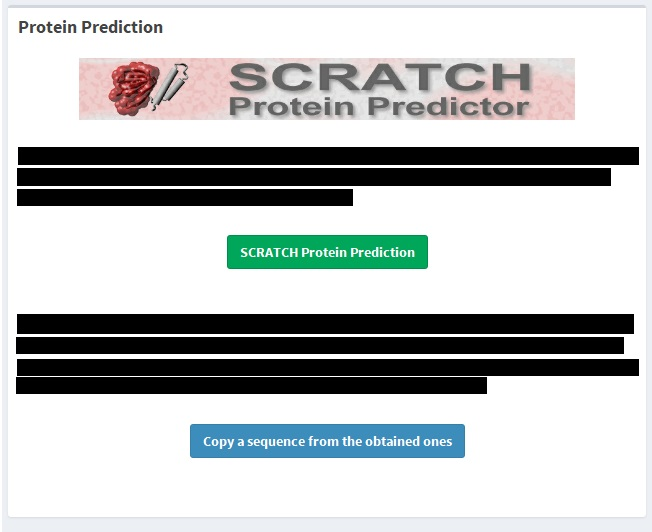
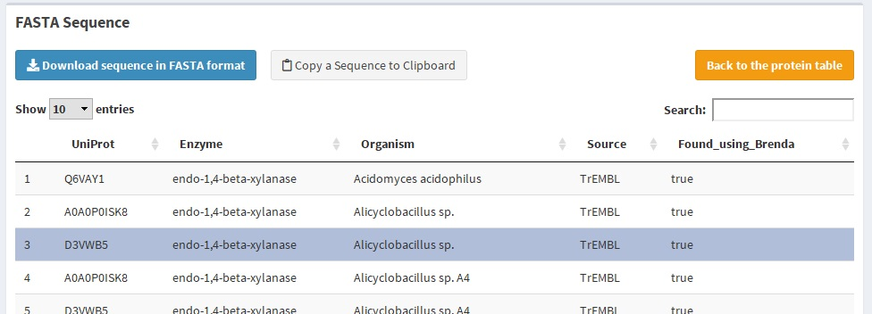
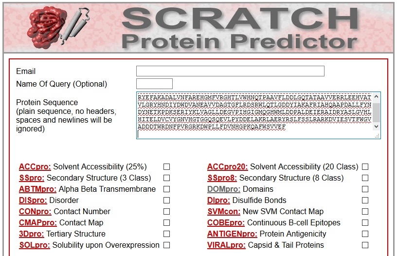
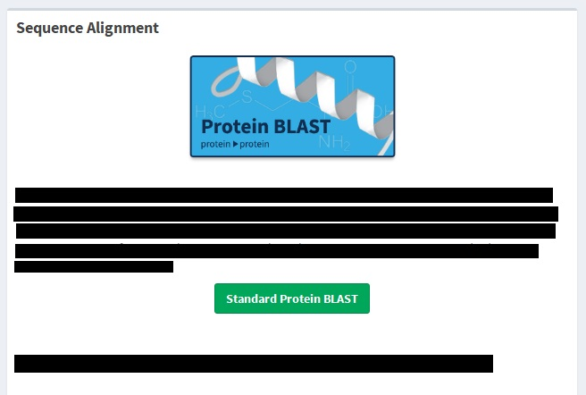

To make all this data useful we propose two other tools available online Scratch Proteomics and BLAST. You can find this section by dashboard menu or by quick access toolbar.
University of California, Irvine, has developed a Protein Predictor. Using RNN (Recursive Neural Network), this tool can predict properties such as domains, secondary structure, tertiary structure and more ( more info ).
To help you use this tool, we allow you to copy one of your obtained sequences. First, click the blue button below the "Scratch Protein Prediction" box.
This is going to redirect you to FASTA section, this has a white button which says "Copy a Sequence to Clipboard". Select one (and just one) sequence on the table and click the button.
 Note: Make sure the sequence is available (Found_using_Brenda = true) if not, nothing is going to be copied to your clipboard.Now the green button is going to have a ticket, this means a sequence is in your clipboard. Press the green button and you are going to be redirected to the Scratch proteomics site.
In this page, you can select what predictor you want to use. Enter your email and in the Protein Sequence space, paste the sequence which is already on your clipboard.
 The header is missing for requirements of the tool. Please, read the tool specifications to know if your sequence is allowed.Basic Local Alignment Search Tool (BLAST) is a suite of programs for aligning sequence. These programs include Standard Nucleotide BLAST, for the nucleotide sequence, and Standard Protein BLAST, for amino acids sequence. This last one receives a number of inputs ( more info ), including upload a text file with the sequence in FASTA format as the one you can obtain using BEST.
